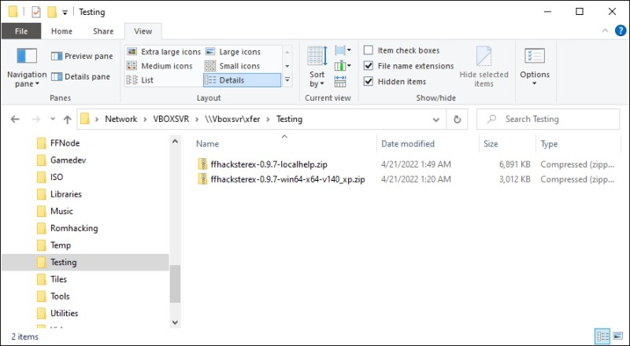
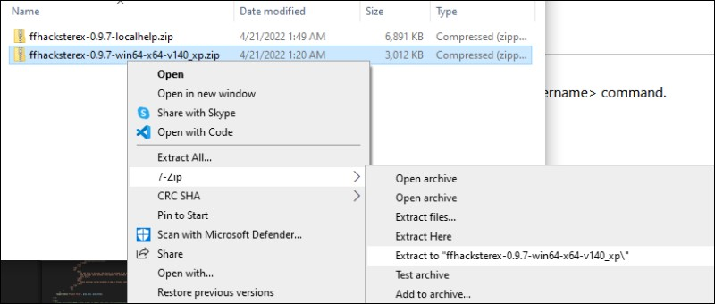
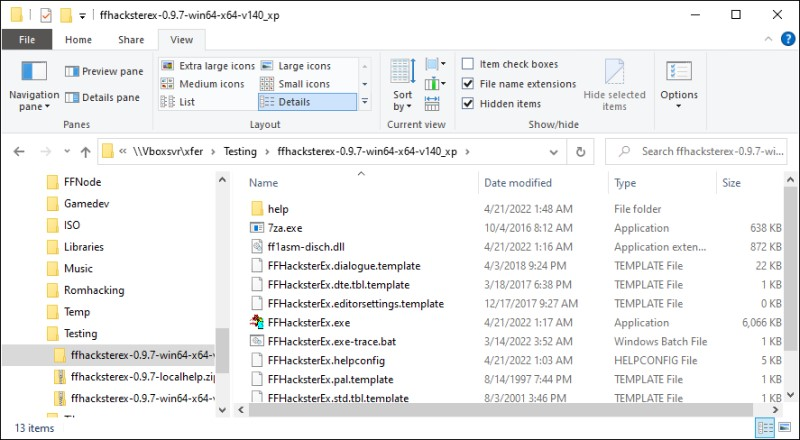
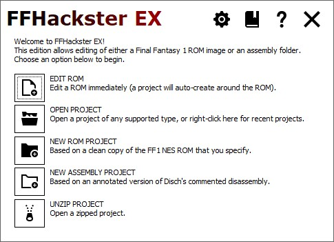
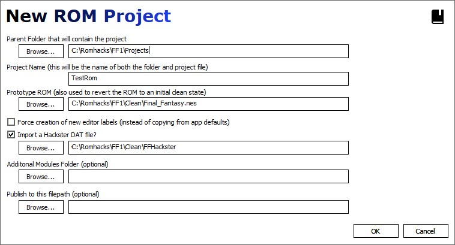
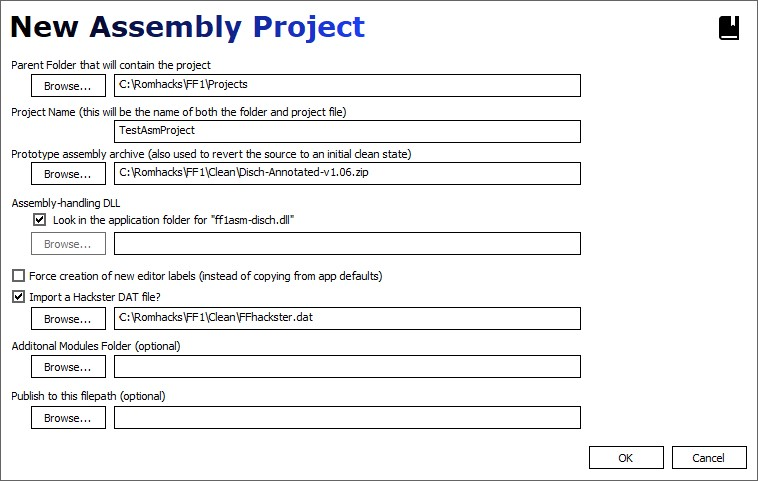
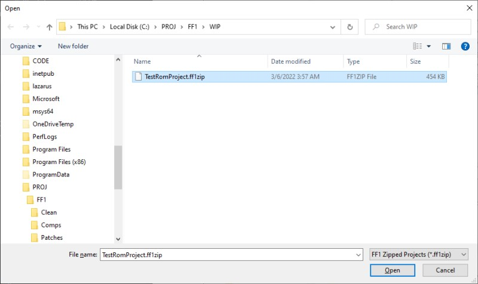
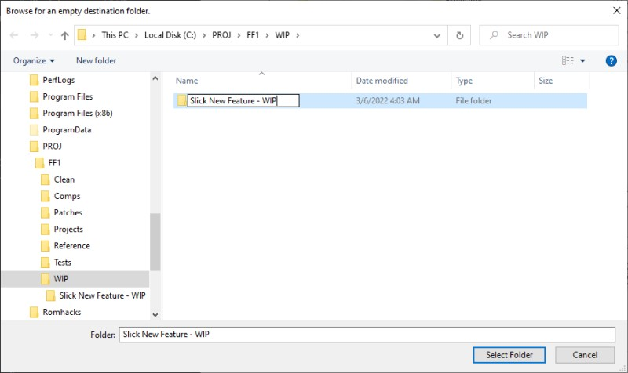
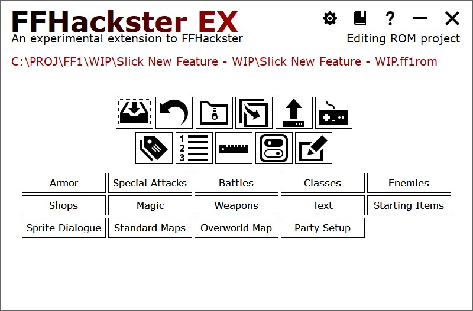

Setup and Start
Setup
The App
- Go to the Releases page.
- Download the app zip package (x86 or x64)
- Create a folder for FFHEx, then unzip the package contents into that folder.
- NOTE: ensure that the folder you create is in a writable folder!
- Since the app doesn't ship with app settings, unzipping into an existing folder will overwrite the app files while leaving the app settings intact.
Local Help
- - Go to the Releases page.
- - Download the help zip package.
- - Unzip the help package into the FFHEx folder you created above for the app.
Here's an example using version 0.9.7:
- - Download the app and help zip files.

- - Create a folder, then extract the contents of the app zip into it.In this case, 7-zip can do it in one step with the Extract to <foldername> command.For this example, the folder is now named ffhacksterex-0.9.7-win64-x64-v140_xp

- - Extract the contents of the help zip file into the ffhacksterex-0.9.7-win64-x64-v140_xp folderThe app folder should now contain a help subfolder.

- - Go into the folder, then run FFHacksterEx.exe.
- - The "Welcome to FFHackster EX" dialog appears. press F1.
- - Hopefully, a browser window opens to the Main document in question.This typically opens a new tab in the default browser.NOTE: currently, each help page will be invoked in a separate tab.
Running the app

On the welcome window, you will notice the System Icons along the top right of the window.
There are five main action Icons that allow you to start new projects and resume existing ones.
Icon Tray
| The gear icon accesses application wide settings. See App Settings for more information. | |
| The book icon accesses help (if available). F1 invokes help for the page, Shift+F1 for the focused control if available. | |
| The question icon opens the About window. |
Editing a ROM
On the welcome screen, click the Edit ROM button.
Use the open file prompt to select a ROM file.
You will then be shown the editor selection window. You can click OK to accept the defaults.
The project will then create, using a copy of the ROM you selected as the base image for the project.
Opening a Project
Click the Open Project button, and select a project.
NOTE: FFHEx attempts to support older project versions via an upgrade.
If an upgrade fails, your only recourse will be to create a new project,
then copy all of the files EXCEPT for the project file from the failing
project folder to the new one.
Project files come with the extensions "ff1rom" and "ff1asm".
Creating a new ROM project
Click the New ROM Project button; the New ROM Project window appears.

| Field | Detail |
|---|---|
| Parent Folder | The project folder will be created inside of this folder. |
| Project Name | The name to use for the project folder and the name of the project. |
| Prototype ROM | A copy of this file will be used as the ROM for the project. The selected file is NOT modified. |
| Force creation of labels | If checked, new default labels are used instead of copying from the app templates. |
| Import a DAT file | If checked, the specified DAT file's settings will be imported during creation. |
| Additional Modules Folder | The app will also look for extensions in this folder. |
| Publish to this filepath | The publish command will copy the working ROM to this filepath. |
Creating a new Assembly project
Click the New Assembly Project button; the New ROM Project window appears.
The layout is similar to the ROM project window, with the exceptions highlighted in the table below.

| Field | Detail |
|---|---|
| Parent Folder | The project folder will be created inside of this folder. |
| Project Name | The name to use for the project folder and the name of the project. |
| Prototype assembly archive | A copy of this ZIP file will be used as the source for the project. The selected ZIP file is NOT modified. The code is unzipped inside of the project folder, into a subfolder named "asm". |
| Look in app folder for "ff1asm-disch.dll" | Checked: attempt to use the default assembly DLL, "ff1asm-disch.dll" from the application/program folder. Unchecked: specify the location of an assembly DLL. Note that this option exists for implementors who want to provide an alternate assembly than the Annotated Disch assembly used by by default. For example, if a DLL is written to target Anomie's disassembly, then specify that DLL here. If you are using the Annotated Disch disassembly, then leave the box checked and ignore it. |
| Force creation of labels | If checked, new default labels are used instead of copying from the app templates. |
| Import a DAT file | If checked, the specified DAT file's settings will be imported during creation. |
| Additional Modules Folder | The app will also look extensions in this folder. |
| Publish to this filepath | The publish command will copy the working ROM to this filepath. |
Project archives
FFHEx can save a project to a ZIP archive with a custom extension.
These archives can then be restored at any time with the Unzip Project.
See Revert, Archive, and Clone for more information concerning archives.
Select an archive file, and you will be prompted to select an empty folder.

We'll create an empty folder into which the archive will be unpacked.

A new project is unzipped into this folder; the project and its main files will be renamed to match the folder.

Application Files
| File Name | Usage |
|---|---|
| 7za.exe | 7-zip standalone executable, used for project archives. |
| ff1asm-disch.dll | DLL used to provide experimental support for the FFHEX-annotated Disch Disassembly.
|
| FFHacksterEx.exe | Main executable that runs the program. |
| FFHacksterEx.exe-trace.bat | Batch file that runs the main executable and logs its output to a file. |
| FFHacksterEx.appsettings | Stores application-wide settings. |
| FFHacksterEx.dialogue.template | Settings used when creating the dialogue file for new projects. |
| FFHacksterEx.dte.tbl.template | DTE table values used when creating new projects. |
| FFHacksterEx.std.tbl.template | Standard table values used when creating new projects. |
| FFHacksterEx.editorsettings.template | Initial editor settings for new projects. |
| FFHacksterEx.pal.template | Initial palette settings for new projects. |
| FFHacksterEx.strings.template | Initial settings for in-editor labels. |
| FFHacksterEx.values.template | Initial settings for configurable values used by the editor. |
| FFHacksterEx.helpconfig | Dialog box and control Mappings for F1 help. |
Project Files
For example, if the project is named TestRom, then the files will have names starting with TestRom like TestRom.pal, TestRom.values, etc.
| File Name | Usage |
|---|---|
| {ProjectName}.ff1rom | ROM Project only The project file containing descriptive info about the project. |
| {ProjectName}.ff1asm | Assembly Project only The project file containing descriptive info about the project. |
| {ProjectName}.dialogue | Settings used when creating the dialogue file for new projects. |
| {ProjectName}.dte.tbl | DTE table values used when creating new projects. |
| {ProjectName}.std.tbl | Standard table values used when creating new projects. |
| {ProjectName}.editorsettings | Initial editor settings for new projects. |
| {ProjectName}.pal | Initial palette settings for new projects. |
| {ProjectName}.strings | Initial settings for in-editor labels. |
| {ProjectName}.values | Initial settings for configurable values used by the editor. |
| {ProjectName}.revert.values | Contains original values for the values file. |
| {ProjectName}.revert.zip | Assembly Project only Contains original state of the asm folder (see below). |
| {ProjectName}.work.nes |
ROM Project only
Created from the template ROM during project creation, this is used for all work;
saving, loading, and play testing.
Assembly Project only
Created when the assembly is compiled, used for play testing. In Assembly projects,
edits are made directly to the data in the asm folder; when compiled, the results are
written to this file so it can be used for play testing.
|
| asm/ |
Assembly Project only
Contains all disassembly files.
Of special note is the .asmtype file. For supported assembly source archives,
there will be a file with an .asmtype extension, e.g.
|